Перевод оригинала:DMA Code Execution – Lystic's Blog
При использовании устройства DMA атакующий ограничен чтением и записью памяти, и в большинстве случаев этого достаточно. Однако существуют обстоятельства, когда чтение и запись памяти не позволяют достичь желаемого.
Например:
Если мы хотим отправить сетевое сообщение в играх, использующих защищенные указатели, например, в Valorant. (см. этот пост) В таких ситуациях карта DMA кажется почти бесполезной. Нам нужен способ выполнить код на машине жертвы и получить результат этого кода.
Для достижения этого я придумал решение, которое сочетает в себе использование неиспользуемых секций .text и .data вместе с простым хуком на функцию, вызываемую каждый кадр/тик.
Давайте рассмотрим требования моего взлома. Сначала некоторая терминология:
Атакующий > Машина Атакующего. Она подключена к нашей карте DMA и запускает приложение DMA.
Жертва > Машина Жертвы. В эту машину вставлена карта DMA PCIe, и мы читаем/пишем в неё.
Приложение Жертвы > Программное обеспечение, работающее на Машине Жертвы, в котором мы хотим выполнить код.
Приложение DMA > Программное обеспечение, работающее на Машине Атакующего, которое управляет нашей картой DMA.
Для выполнения кода в функции, например, запуска malloc, сначала нам нужны три вещи:
- неиспользуемый буфер секции .data длиной 0x21 байт или больше.
- неиспользуемый или недоступный буфер секции .text, который может вместить наш пейлоад.
- 5-байтовая инструкция вызова в функции, которая выполняется каждый кадр/тик или часто.
Я создал примерное приложение, которое соответствует этим требованиям.
Сначала нам нужно найти буфер в .data, который не используется. Мы ищем что-то вроде этого:
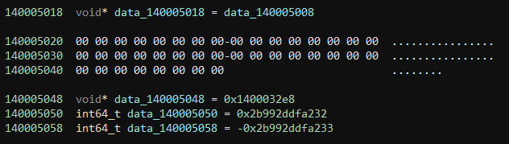
Между data_140005018 и data_140005048 существует 0x28 неиспользуемых байтов. Этого достаточно, чтобы удовлетворить наше требование в 0x21 байт.
Далее, нам нужно найти буфер в .text, который недоступен или не используется. Этот буфер должен быть довольно большим, поэтому мы захотим найти какой-нибудь большой кодовый сегмент за условным оператором if, который всегда возвращает ложь. Если мы покопаемся, мы найдем, что условие в этой функции никогда не выполняется, и существует 0x3AC байтов, мы можем использовать в качестве буфера:
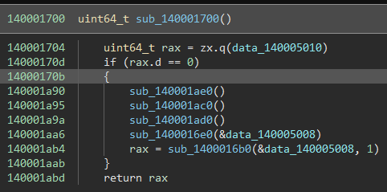
Наконец, нам нужно найти 5-байтовую инструкцию вызова, которая выполняется часто или каждый тик. Вот поток, который выполняется каждую миллисекунду с вызовом:
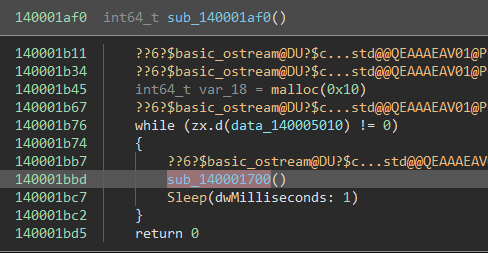
Глядя на дизассемблирование, мы можем с уверенностью сказать, что этот вызов занимает 5 байтов:
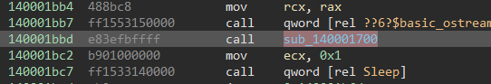
Теперь нам нужно выяснить, как использовать эти неиспользуемые секции для создания выполнения кода. Первым шагом, как я это вижу, является перехват инструкции вызова и изменение потока программы в наш буфер .text.
Для этого мы перезаписываем инструкцию вызова как инструкцию jmp и переходим в наш буфер .text:
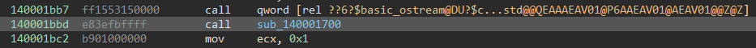
становится:
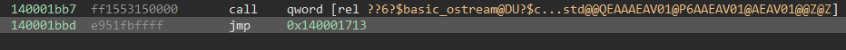
Теперь, в нашем буфере .text, мы воссоздаем вызов, который был перезаписан:
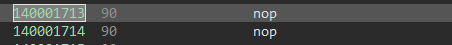
становится:
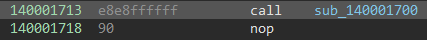
Теперь в нашем буфере .text мы восстанавливаем вызов, который был перезаписан:
становится:
Наконец, мы должны вернуться к инструкции, следующей за вызовом, который мы перезаписали:
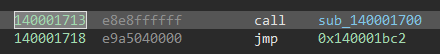
Теперь мы можем проверить это, либо модифицировав наше приложение-жертву, либо записав эти байты с помощью нашей карты DMA.
Если у нас все получилось, приложение-жертва должно функционировать без изменений и не должно крашиться.
После того как мы научились перехватывать нашу инструкцию вызова, мы можем начать создавать пейлоад кода для вставки в буфер .text, который позволит вызывать произвольные функции.
Первая часть этого - определить, какие данные должна предоставить карта DMA, чтобы сделать произвольный вызов.
Я создал структуру из 0x21 байта, которая удовлетворяет этим требованиям:
Код:
#pragma pack(push, 1)
struct run_struct {
bool do_exec;
uint64_t function_address;
uint64_t arguments_pointer; // points to single_arg_argument in the case of single argument function calls
uint64_t return_value;
// uint64_t single_arg_argument;
};
#pragma pack(pop)- Сначала нам нужен байт, который будет действовать как переключатель. Таким образом, наша целевая функция будет выполняться только тогда, когда наша карта DMA изменит это значение на ИСТИНА.
- Нам нужен абсолютный адрес функции, которую мы хотим вызвать.
- Нам нужен указатель на структуру, содержащую все наши аргументы.
- Нам нужен буфер для записи результата.
- Наконец, нам нужно еще 8 байтов в качестве буферного пространства для функций, требующих 1 аргумент (я объясню почему позже).
С этой структурой, мы можем начать создание пейлоада для секции .text. Нам нужно будет знать некоторые ассемблерные команды x86_x64.
Первое, что мы должны сделать, это сохранить все наши волатильные регистры и другие регистры, которые мы будем использовать, на стеке.
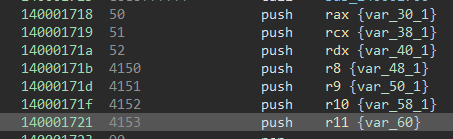
Затем мы обратимся к секции .data и проверим, истинно ли булево переключение. Если значение ЛОЖЬ, то нам нужно перейти к концу нашего буфера .text, но перед тем как восстановить стек (об этом будет рассказано ниже).
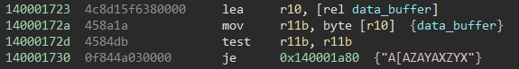
Теперь, для безопасности, мы можем проверить, является ли целевая функция NULL. Если это так, мы не можем её выполнить, поэтому мы захотим перейти к концу нашего буфера .text, так же как и раньше.
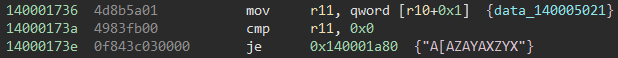
Наконец, мы поместим функцию, которую хотим выполнить, в регистр RAX.
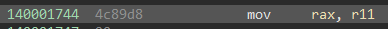
Примечание: На этом этапе мы могли бы вызвать нашу функцию. Однако мы хотим иметь возможность запускать функции с аргументами. Поэтому я продолжу, как если бы мы хотели вызвать функцию с 5 аргументами, чтобы показать все необходимые шаги.
Для вызова функции с аргументами нам нужно понять конвенцию вызова x64. Коротко говоря: первые четыре аргумента передаются через регистры rcx, rdx, r8 и r9 соответственно, в то время как все последующие аргументы помещаются на стек в обратном порядке. Значения с плавающей точкой обрабатываются иначе, и я решил их не охватывать.
Первый шаг при вызове функции с аргументами - убедиться, что наш указатель на структуру аргументов не равен null.
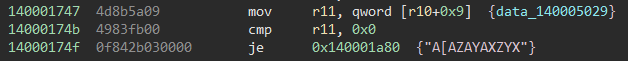
Теперь мы должны поместить наши первые четыре аргумента в соответствующие регистры.
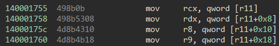
Для всех оставшихся аргументов мы захотим загрузить их в регистр и поместить их значение на стек в обратном порядке. В нашем случае у нас есть только ещё один аргумент, поэтому нам нужно сделать это только один раз для значения по адресу 0x20.
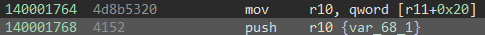
Наконец! Мы можем вызвать функцию.
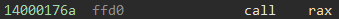
После вызова функции нам нужно извлечь аргументы, которые мы поместили на стек.
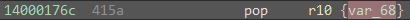
наконец, мы помещаем результат возвращения в структуру .data и возвращаем булево переключающее значение обратно в ложь (чтобы предотвратить повторный запуск этой функции).
Теперь у нас есть пейлоуд .text, который может выполнить любую функцию с 5 аргументами! Вот финальный ассемблерский код:
Код:
140001713 e8e8ffffff call sub_140001700
140001718 50 push rax {var_30}
140001719 51 push rcx {var_38}
14000171a 52 push rdx {var_40}
14000171b 4150 push r8 {var_48}
14000171d 4151 push r9 {var_50}
14000171f 4152 push r10 {var_58}
140001721 4153 push r11 {var_60}
140001723 4c8d15f6380000 lea r10, [rel data_140005020]
14000172a 458a1a mov r11b, byte [r10] {data_140005020}
14000172d 4584db test r11b, r11b
140001730 0f8447000000 je 0x14000177d {"A[AZAYAXZYX"}
140001736 4d8b5a01 mov r11, qword [r10+0x1] {data_140005021}
14000173a 4983fb00 cmp r11, 0x0
14000173e 0f8439000000 je 0x14000177d {"A[AZAYAXZYX"}
140001744 4c89d8 mov rax, r11
140001747 4d8b5a09 mov r11, qword [r10+0x9] {data_140005029}
14000174b 4983fb00 cmp r11, 0x0
14000174f 0f8428000000 je 0x14000177d {"A[AZAYAXZYX"}
140001755 498b0b mov rcx, qword [r11]
140001758 498b5308 mov rdx, qword [r11+0x8]
14000175c 4d8b4310 mov r8, qword [r11+0x10]
140001760 4d8b4b18 mov r9, qword [r11+0x18]
140001764 4d8b5320 mov r10, qword [r11+0x20]
140001768 4152 push r10 {var_68_1}
14000176a ffd0 call rax
14000176c 415a pop r10 {var_68}
14000176e 4c8d15ab380000 lea r10, [rel data_140005020]
140001775 49894211 mov qword [r10+0x11], rax {data_140005031}
140001779 41c60200 mov byte [r10], 0x0 {data_140005020}
14000177d 415b pop r11 {var_60}
14000177f 415a pop r10 {var_58}
140001781 4159 pop r9
140001783 4158 pop r8
140001785 5a pop rdx
140001786 59 pop rcx {var_38}
140001787 58 pop rax {var_30}
140001788 e935040000 jmp 0x140001bc2У нас есть один вопрос. Как мы выделяем память для хранения всех 5 аргументов? Что, если нам нужно больше 5 аргументов? Для этого я предлагаю использовать функцию вроде malloc. Эта функция принимает один аргумент длиной 8 байт. Вот почему нам нужно дополнительные 8 байтов в конце нашей структуры для функций с 1 аргументом. Когда вызывается malloc, предполагается, что у нас нет дополнительной рабочей памяти, поэтому мы должны использовать какой-то буфер в .data для нашего аргумента.
Теперь нам нужно начать создание нашего приложения DMA. Для начала нам нужно найти значения RVA трех требований. Мы назовем их dataAddress, callHijack и textBuffer. В нашем целевом приложении эти три значения находятся по смещениям 0x5020, 0x1bbd и 0x1713 соответственно.
Таким образом, наше приложение DMA начнет выглядеть примерно так:
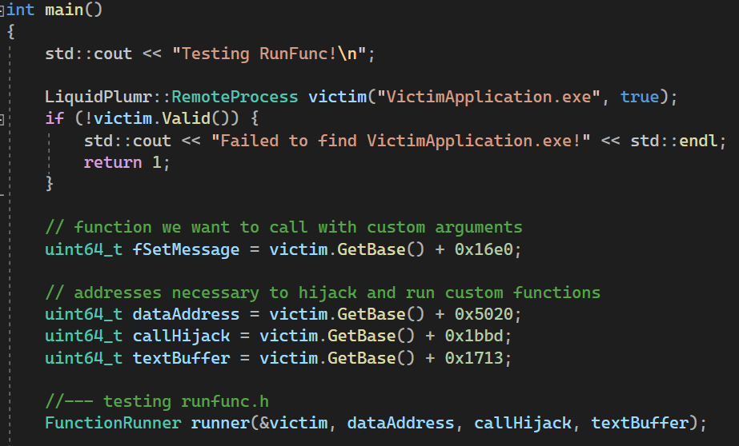
Я создал аккуратный фреймворк вокруг моего приложения DMA. Я не ожидаю, что это будет актуально в будущем, так что вы можете воспринимать часть кода как должное.
Я создал класс под названием FunctionRunner. Он будет реализовывать очень простой интерфейс для выполнения кода в целевом приложении. Этот интерфейс выглядит так:
Код:
amespace LiquidPlumr {
class FunctionRunner {
public:
FunctionRunner(LiquidPlumr::RemoteProcess* pApplication, uint64_t dataAddress, uint64_t callAddress, uint64_t textAddress);
// allocate memory
uint64_t Malloc(size_t size);
// free memory allocated with Malloc
bool Free(uint64_t address);
// run a function that takes up to 15 arguments (non-float values only!)
uint64_t Run(uint64_t function, uint32_t count, ...);
// run a function that takes no arguments
uint64_t Run(uint64_t function);
};
}Извините за внезапное окончание – я хотел открыть это, чтобы новые читатели могли узнать немного больше о некоторых более интересных способах использования DMA.
Примечание от переводчика, т.е. меня, как концепт использовать можно, но сложновато, нужно реверсить игру, можете попробовать если есть силы.)
Удачи!